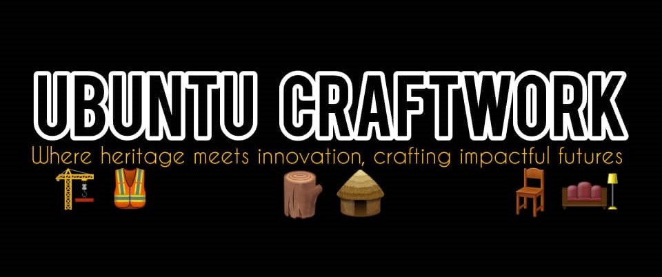

About Us
AKAM Entertainment, Farming, Home Services, Gaming, Construction, and Event Management, build a sustainable network to improve the business ecosystems of the African Continent for the benefit of future generations.
We solve industry needs through our innovative and unparalleled creative capabilities driven by reliability, community building & the development of the African continent through multiple industries.
Our services enable paramount influence from multiple services in rising industries across the African Continent. Our services are strategically deployed to contribute in industries such as Entertainment (AFRI Summer Vibes Festival), Gaming E-Sports (Ubuntu Gaming), Agriculture (Ubuntu Groves Farm), Home Services (HomeBuddies App), Construction (Ubuntu Craftworks), Event Management (Faith & Fortune Seminars).
Our Divisions
Afri Summer Vibes Festival
Tagline: Roots to Rhythm Celebrating The Heartbeat Of Africa
This celebration of African music, arts, and culture showcases the continent's diversity and richness, featuring both traditional and contemporary music. Hosted annually in various cities, it aims to conquer all 54 African countries while highlighting countless traditions, languages, and cuisines.
Vision: To become the premier platform for African music and culture on the global stage while linking the African continent to its people and showcasing stunning and emerging jewels.
Mission: Empower African creativity, drive economic growth, and connect global audiences to Africa’s cultural heartbeat while celebrating Africa’s diversity, empowering communities and promoting cultural exchange.
Ubuntu Groves Farm

Tagline: I am Because We Are
A pioneering agricultural enterprise rooted in the ethos of Ubuntu – the Southern African philosophy of interconnectedness. This innovative farm integrates cutting-edge technology, circular farming practices to address critical gaps in food security, sustainability, and economic equity across the Southern African Development Community. Ubuntu Groves operates on a closed-loop system that mimics nature’s efficiency, livestock-crop synergy, the farm produces five core categories tailored to Southern Africa’s demand such as antibiotic-free poultry, sustainable pork, hydroponic tomatoes, gourmet mushrooms and export-ready mint.
Vision: To lead in sustainable, high-quality meat and vegetable supply while promoting climate resilience and inclusive growth.
Mission: Cultivate abundance through regenerative agriculture, providing nutritious food, creating dignified livelihoods, and nurturing ecosystems.
ZalServices (HomeBuddies)
Tagline: Your Home, Our Pride. Services at Your Fingertips.
This multi-service platform connecting users with vetted professionals for home cleaning, childcare, groundskeeping, handyman repairs, and Africa-specific needs like generator maintenance and water delivery. ZalServices is not just an app but a movement to redefine home care in Africa. By blending hyper-local adaptation with scalable tech, it addresses critical gaps in service quality employment and financial inclusion. With a focus on trust, community, and innovation ZalServices is poised to become Africa’s answer to the global gig economy.
Vision: To revolutionize Africa’s informal home services sector by formalizing gig work, improving service quality, and becoming the continent’s most trusted platform for household care by 2030.
Mission: Empower African households and service providers by bridging the gap between demand and supply of reliable, affordable home services through a trusted, tech-driven platform that prioritizes safety, dignity, and economic opportunity.
Ubuntu Gaming
Tagline: Uniting Africa’s Gaming Ecosystem Through Culture, Competition, and Community
A place for African gamers and streaming services fanatics to build sustainable and lucrative careers through E-Sports in Africa. Ubuntu Gaming is designed to celebrate Africa’s rapidly growing gaming industry while fostering economic opportunities, cultural exchange and technological innovation. Ubuntu Gaming is positioned to capitalize on Africa’s gaming market, offering a culturally resonant, financially viable platform for global brands and local talent.
Vision: To be Africa’s premier gaming event platform uniting gamers, creators, and brands.
Mission: Foster community, showcase innovation and celebrate African gaming culture.
Ubuntu Craftwork

Tagline: Where Heritage Meets Innovation, Crafting Impactful Futures
This is furniture manufacturing enterprise that combines artisanal craftsmanship, cultural heritage, and sustainable innovation to deliver high quality, CSI-aligned furniture solutions across Southern Africa. Founded as a 51% Black-owned business, we specialize in bespoke furniture for corporate, residential, and public sector clients. Our sustainable production proposition of using 90% reclaimed or FSC-certified materials, modular, repairable designs and carbon-neutral operations enables Ubuntu Craftwork to protect Africa’s stunning jewels.
Vision: Be Southern Africa’s leading CSI-compliant furniture brand, recognized for innovation, empowerment, and environmental stewardship.
Mission: Transform the furniture industry through sustainable, culturally inspired designs while driving measurable socio-economic impact.
Faith & Fortune
Tagline: Empowering African Believers in Business
This is an initiative that merges spiritual principles with entrepreneurial pragmatism. It is built on the conviction that faith and business success are synergistic, not contradictory. The title reflects two pillars, Faith – as a moral foundation for ethical decision-making, resilience, and community upliftment & Fortune – as the tangible outcomes of sustainable, purpose-driven entrepreneurship. Our seminars address spiritual burnout and moral dilemmas unique to devout entrepreneurs.
Vision: To empower African entrepreneurs to achieve holistic success—spiritual fulfillment, ethical integrity, and economic prosperity by integrating faith-based values into business practices.
Mission: Dismantle the false dichotomy between sacred and secular work, positioning entrepreneurship as a divine calling and tool for societal transformation.